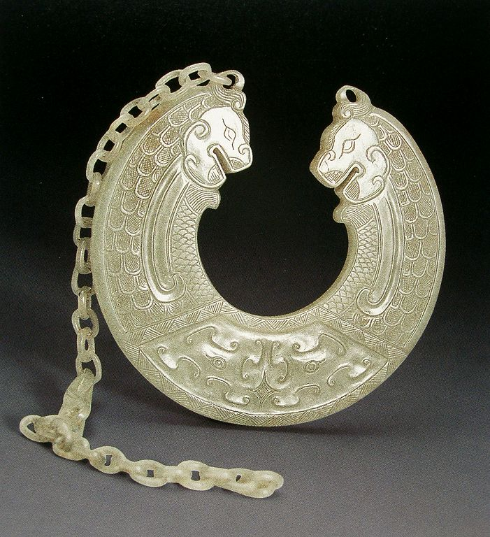
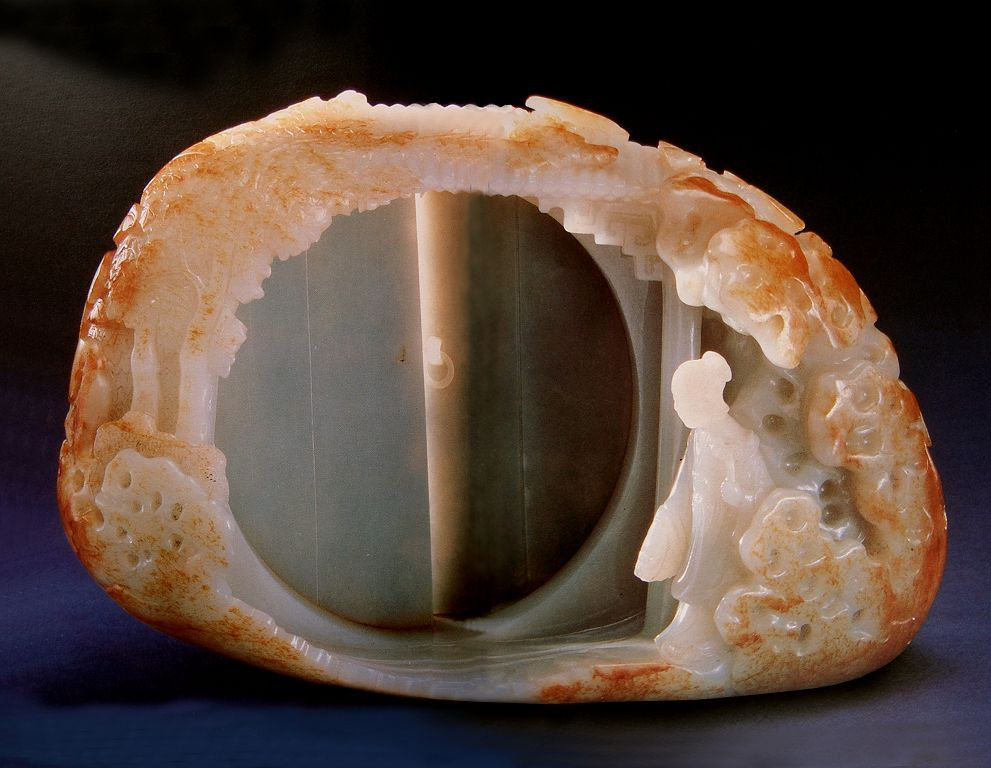

玉雕工艺基础知识 玉是经过了亿万年的地壳运动而形成的矿物，质地坚硬细腻，视感美丽温润；由于玉的特殊性质而形成了琢玉的特殊加工工艺；在漫长的琢玉工艺中淀积着我们民族深厚的文化底蕴。 学习目标：1. 熟悉玉材料 教学要求：通过本章的教学，使学员能基本识别玉石的主要品种；能了解琢玉的基本工艺以及工作原理；能对我国的琢玉文化有一个基本的了解。 实践项目：1. 对不同玉石的品质、性能、色泽进行认识、鉴别。 一、多彩的玉石 1.和田玉（软玉） 我国和田玉产于昆仑山。距今4000万年前，在喜玛拉雅的造山运动中，昆仑山隆起，被提升到海拔4000米以上，那里的地球岩石因剧烈演变而形成软玉矿带，造就了神奇美妙、独一无二的昆仑美玉。 和田玉即软玉，摩氏硬度为6～6.5，油脂光泽，半透明至不透明。由于地理位置的差异和微量元素的不同，因此和田玉形成了多样的品种。 和田玉基本由籽玉和山料之分：和田玉自古以来就分为山产和水产两种，水产的称为籽玉， 山产的叫山玉。但古代是以“水产”为主的。人们首先发现和利用河流冲积的和田玉，继而沿河溯源发现了原生玉矿。 ① 羊脂白玉 羊脂白玉是和田玉中最为名贵的一种，色泽如羊羔脂肪，白度高，油性足，玉质细腻缜密，温润油濡，坚硬而柔和，浓郁而莹透，料体完美无瑕。此料藏于新疆山地冰雪之中，或见于河床之间，必须等到冰雪融化后才能下河采玉或上山寻矿。真正的羊脂白玉是非常难觅的(图1-1-1)。 图1-1-1 羊脂白玉
② 籽玉 籽玉俗称石流籽料。此料是随着山洪从冰川之上冲下了江河，又随着汹涌江水带到了河的下游，经过了漫长岁月的迁移，滚动，又伴随自然的风化剥蚀，形成了包皮状，质地细腻温润，光滑如卵。它比山料硬，色越白越好，有的籽白玉经氧化表面带有一定色彩，有红枣色、秋葵色、虎皮色等，它们都是和田玉的名贵品种(图1-1-2、图1-1-3)。 图1-1-2 籽玉
 图1-1-3 籽玉 图1-1-3 籽玉 ③ 山料 山料俗称“昆仑山玉”，产于新疆且末县，属软玉的原生矿石。山料的特点是块度比籽料大，有棱角，良莠不齐，质量一般不如籽玉。纯白的山玉量较少，因含不同的微量元素，呈现白、青白、青、青灰、黑，还有糖色、碧色、黄色等品种（图1-1-4、图1-1-5）。 图1-1-4 山料
图1-1-5 山料
和田玉是中国四大名玉之一，而且在四大名玉之首，由于大量开采，因此玉源稀少，和田玉在今天显得尤为珍贵。 2.翡翠（硬玉） 翡翠即硬玉，产于与我国云南省德宏、保山毗邻的缅甸。在山上称为山石，在河底称为水石。 翡翠原是古时候一种美丽小鸟的名称，它的颜色和硬玉相似。然而今天的翡翠一词已失去小鸟的含义，成了硬玉的名称。 翡，是硬玉红色部分的简称；翠，是硬玉绿色部分的简称；还有“春”，是翡翠中紫色部分的简称。翡翠颜色丰富多彩，如：祖母绿、玻璃绿、豆绿、丝瓜绿、浅水绿，又如：瓜皮青、白地青、油青，还有春花色、春带彩、墨水蓝等。颜色是决定翡翠价值的重要因素，以色浓、色纯、色匀为佳。 翡翠是天然矿石，结构紧密，质地细润，摩氏硬度为7。在光透下可见“苍蝇翅”，特指翡翠中细小晶粒的丝绢状、片状或点状闪光的结构特性。组成矿物颗粒越大，翡翠性质越明显（图1-1-6、图1-1-7）。 图1-1-6 翡翠
图1-1-7 翡翠
好的翡翠透明度强，即行话说的“水分好或水头足”。有的称为冰种料或玻璃种料，在浓郁的绿色中具有透明感，如清澈的碧水，并赋有光泽。这类翡翠相对来说较为稀有，且价格昂贵。 3.珊瑚 珊瑚虽然属于玉石之类，但却不是矿物，而是生长在浅海礁石上的一种珊瑚虫尸体长期堆积而形成的石灰质骨骼。珊瑚虫多群居，集合成群体，呈辐射的树枝形状，故又称珊瑚枝。我国台湾沿海、海南岛、澎湖列岛均有出产。 珊瑚颜色有深红、鲜红、粉红等，其中以色红鲜明为上品，红白色次之，枝体越大越好（图1-1-8）。 图1-1-8 红珊瑚
珊瑚摩氏硬度3.5，质地细腻致密、坚韧，是不透明体，又无反光，因此雕琢可以极为精细，细微之处可看得非常清楚。 原枝珊瑚由于是树枝状，姿态自然、优美，就是不经雕琢也是一件珍贵的装饰品。珊瑚适宜雕琢人物、花鸟、天然瓶等，不适合雕琢炉瓶之类。红珊瑚原料稀少，因此它在玉器原料中显得尤为珍贵。 4.岫岩玉（俗称新山玉） 岫岩玉的矿物学名称是蛇纹石玉，因主要产于我国辽宁省岫岩县而得名。摩氏硬度为5～5.5，质地细腻，性软而脆，油脂光泽，水头较足，半透明体为多，少量微透明或不透明（图1-1-9）。 图1-1-9 岫岩玉
岫岩玉以绿莹莹的青绿色为主，其深浅不一，有淡绿色、绿黄色、油绿色、灰绿色、暗绿色、黑绿色等，有时还含有暗红色、铁红色、金褐色，以及黑灰、青白等杂色。岫岩玉由于色彩丰富，因此常作为俏色雕琢的良好玉料。岫岩玉雕琢范围极广，可以是大件的，也可以是小件的，题材多种多样。 岫岩县是我国最大的玉石开采地，全国的玉器制品原料80%取之于岫岩县。那里不仅玉的开采历史悠久，早在红山文化中就有其身影，而且储藏量极为丰富，不愧“中国玉乡”之称。 岫岩玉结构致密坚韧、细糯醇厚、温润莹透，色泽油绿，视感宜人，是琢玉的良好原料。它是中国四大名玉之一，和其他种类的玉相比，有着较广阔的前景和潜在的升值空间。 5.独山玉（又名南阳玉） 独山玉因产于我国河南南阳市郊独山而得名，也称“南阳玉”，是中国四大名玉之一。独山玉由多种矿物组成，属多色玉石类。它是我国特有的玉石品种，摩氏硬度为6～7，质地坚韧，半透明至不透明。独山玉以绿颜色为主，由于矿物成分的不同和多少而形成不同的色彩，有蓝绿色、淡绿色、黄绿色，以及白、紫、黄、红、青、墨等颜色（图1-1-10）。 图1-1-10 独山玉
独山玉开采历史较早，安阳殷墟妇好墓出土的700余件玉器中，就有部分南阳玉器。独山今遗留有古代采玉的矿坑1000余处，可见古代采玉之盛况。
6.绿松石 又名松石，因其色、形似碧绿的松果而得名，是世界上稀有的名贵宝石品种之一，也是我国四大名玉之一。绿松石具有柔和的蜡状光泽，属三斜晶系。晶体形态呈致密的集合体，呈皮壳状、结核状、球葡萄状，单个晶体极为罕见。绿松石质地十分细腻，韧性较差，硬度为5.5～6（图1-1-11）。 图1-1-11 绿松石
绿松石因含不同的元素，颜色有着差异，形成天蓝色、淡蓝色、月蓝色、绿蓝色、绿色、豆绿色、淡绿色等。优质绿松石经抛光后犹如上釉的瓷器，故有“瓷松”之称。在块体中有铁质“黑线”的称为“铁线绿松石”。“黑线”在绿松石上形成美丽的线纹，令人喜爱。绿松石产地有伊朗、埃及、智利、美国和澳大利亚，以及中国的湖北、新疆等地。 绿松石是古老宝石之一，有着几千年的灿烂历史，深受古今中外人士的喜爱。美国的印第安人认为绿松石是大海和蓝天的精灵，会给远征的人带来吉祥和好运，将其誉为成功幸运之石，是神力的象征。在古埃及、古墨西哥、古波斯，绿松石被视为神秘、避邪之物，当成护身符和随葬品。中国藏族同胞认为绿松石是神的化身，是权力和地位的象征，所以把它做成最为流行的神圣的装饰物。 绿松石是国内外公认的“十二月诞生石”，代表胜利与成功，有“成功之石”的美誉。 7.玛瑙 玛瑙主要成分是二氧化硅,摩氏硬度7～7.5度，质地细腻、坚硬、脆性，半透明，玻璃光泽。由于玛瑙形成的过程很缓慢，是一层一层逐渐凝结的，一块玛瑙往往呈多层状，而每一层的颜色因所含微量元素的不同而有所变化，所以它的截面是各种相似色的带状条纹，层层相叠。玛瑙中心有不同的特征，有实心的，有空心的，有含水的……中心含水称为水胆玛瑙，是玛瑙中的珍品。 玛瑙色彩丰富，有红色、蓝色、绿色、紫色、褐色、黑白灰等色，因而有“千种玛瑙”之说。由于玛瑙在一块原料中就有不同的色彩，因此，可以雕琢俏色之作，有着很高的艺术价值和经济价值，深受大家的喜爱。人们一般喜欢红玛瑙，传说红玛瑙可带来吉祥和好运。 玛瑙产地广泛，几乎遍及全球各地。美国、巴西、印度、乌拉圭、马达加斯加、格鲁吉亚、冰岛等都出产玛瑙。中国的玛瑙主要集中在东三省，最著名的产地当推阜新。南京雨花台所产的雨花石也以玛瑙为主（图1-1-12）。 图1-1-12 玛瑙
8.水晶 水晶在矿物学中属石英类，性脆，摩氏硬度为7。清澈透明的水晶外形很有规律，常见的呈几何的六方柱、，菱面体、三方双锥等。水晶因含不同的金属元素， 而形成不同的颜色和特征。水晶产地主要有巴西、马达加斯加、日本和美国。我国内蒙、新疆、江苏、山东、河南等地均有产出，其中江苏北部的东海县是我国有名的水晶产地（图1-1-13）。 图1-1-13 水晶
9.青金石 青金石是指无或者少量含有黄铁矿和透辉石等杂质的致密块体，是罕见的单矿物体。其拥有庄重而浓艳的青蓝色、深蓝色、藏青色，呈蔚蓝耀金之状。摩氏硬度为5.5，不透明，为玻璃至油脂光泽。青金石是我国自古以来进口的传统玉料，多数来源于阿富汗（图1-1-14）。 图1-1-14 青金
由于青金石色彩深沉庄重，一般可用来雕琢佛像、炉瓶之类。上好的青金石也作镶嵌之宝石。青金石是天然的矿物颜料，我国敦煌莫高窟千佛洞的彩绘，就是用青金石磨成粉末作颜料的，画面色感浓丽、雅致、沉稳，永不褪色。 10.芙蓉石（又名祥南） 芙蓉石是一种半透明至透明的石英块体，也称“蔷薇石英”。顾名思义它的颜色就如芙蓉花一样粉红而艳丽。其化学成分主要为二氧化硅，摩氏硬度为7，坚硬兼脆，断口贝壳状，呈玻璃光泽，有宝石的反光特点。芙蓉石以呈鲜艳的樱红色、透度强、少裂纹、无杂质为上品（图1-1-15）。 图1-1-15 芙蓉石
芙蓉石分布不广，世界上的优质芙蓉石主要产于巴西、斯里兰卡。此外，美国、西南非洲、，马达加斯加等地亦产芙蓉石。中国芙蓉石主要产于新疆、湖南等地。 11.木变石（又名老虎石） 木变石在矿物中为硅化石棉，其主要成分为二氧化硅，摩氏硬度为7，产于我国河南等地。木变石其结构是平直密集排列的纤维状石英集合体，因此形成了十分清晰的似木纹的丝绢光泽，故名木变石（图1-1-16）。 图1-1-16 木变石
木变石的颜色常有嫩黄色、金黄色、黄褐色、深褐色等，其中以金黄色为佳。其质地细腻坚韧，有明显的犹如竹的丝缕和较强的折光，是不透明体。 12.孔雀石 孔雀石是一种古老的玉料。中国古代将孔雀石磨成粉末作为国画的颜料，称其为“石绿”。因孔雀石的颜色和纹理与孔雀的尾羽极为相似，故得此名。 孔雀石是一种含铜的碳酸盐矿物，为不透明体，摩氏硬度3.5～4.5，颜色有翠绿、草绿、暗绿色等，有明显纹带。优质孔雀石结构紧密坚实，无裂纹、无孔隙，颜色呈鲜艳的微蓝绿色，纹理清晰富有变化（图1-1-17）。 图1-1-17 孔雀石
孔雀石世界各地都有出产，主要在智利、俄罗斯、澳大利亚、刚果、东非和中国等。 以上简略的介绍了12种玉石，其实玉石种类还远远不止这些，丰富的玉石资源为玉器琢磨提供了源源不断的材料；奇光异彩、千姿百态的玉石，孕育着琢玉的创意灵感。 二、特种的工艺 玉器琢磨的工艺特点是由玉料的特性所决定的。玉质坚硬，摩氏硬度一般在5～7，而且具有脆性，因此不宜用刀具进行雕凿。从古至今一般都采用碾磨的方式来对玉料进行加工，其基本工具是砣机、砣轮、砂和水。 1.砣机 自古以来琢玉一直是在转动的砣轮之下进行的。见《天工开物》琢玉图（图1-2-1），图中琢玉者的双脚不断地上下踩动，然后通过皮带传动使轴杆和铁制砣轮不断地双向来回转动，其转速的快慢完全在于脚下，同时双手加以配合进行磨制，这就是古代“脚蹬手磨”的琢玉方式。这种方式一直延续到20世纪50年代左右。之后，艺人开始以电动马达作为动力，使双脚得到了解放，不仅加快了转速，还大大提高了功效，另外单向转动更便于磨制。20世纪70年代起玉雕机又进行了改革，那就是一直延用至今的高速玉雕机。它的优点是机型小，转速极快，而且是无级调速，现代科技为玉器琢磨提供了良好的设备。  图1-2-1 古代琢玉图 图1-2-1 古代琢玉图 2.砣轮 琢磨一件玉器需要很多不同形状和大小的砣轮，它们都有各自的用途和名称：扦砣、斩砣、冲砣、压砣、扎砣、掏砣、钩砣，还有杠棒和砂钻等（这些砣轮的名称都是行业中的俗称，由于南北方言不同，因此各地称谓也许存在差异）。 扦砣和斩砣：这两种工具都是圆形片状的。扦砣直径约30厘米（有大小之分），斩砣直径约10厘米（有大小之分）。扦砣一般作分割玉料的切削或作品大坯的出形，而斩砣是继扦砣后使用的，能够更为细致地斩出形象的体块。在玉器琢磨中只有这两种工具（还有砂钻）能够把多余玉料切成大小不等的体块（碾磨方式），而其他工具则是将多余的料磨成粉末、浆水。 冲砣：类似砂轮的造型，直径约10多厘米，可对器物进行大面积的碾磨。 压砣：一般是斜口的，同时还有平口的、快口的、反口的等，大小有很多种，可根据不同的需求进行选择。压砣通常用于磨制平面、斜面、抛面、凹弧面等。 扎砣：也称扎眼，形状似钉头，而且有些扎砣就是用铁钉做成的。扎砣大小不一，大的似铜钱，小的比芝麻还小。其用途极为广泛，琢磨手势变化无穷，有推、拉、拔、塞、扣、走等技巧，可进行极为精细的雕琢。 勾砣：圆片状，直径一般在1厘米以内，用来勾线，如发丝、叶脉、纹样等，是作品的提神之笔。雕琢时要静心静气，手势灵活，气运手移，这样勾出的线条方能似游丝、如铁线，流畅而有力。 杠棒：杠棒不仅有杠状的，还有似橄榄、喇叭、尖椒、尖针等形状的。此类工具用于磨去不同形的多余玉料，还可打孔、磨凹糟等。 砂钻：是用来钻孔的工具，其造型是用铁皮卷成中空的管状。由于工具呈中空状，因此在打孔的过程中还保留着圆柱状的玉芯。这一工具有着独特的妙用，如可留住玉芯，作销子用；又如制作炉瓶的套用玉料，环环相扣，节节相叠。 以上传统的旋转之砣，都是用熟铁制成的，它们在使用过程中，会磨损、会变形、会慢慢缩小，然后还会有新的用途（图1-2-2）。 图1-2-2 铁制工具图形
3.砂 玉器琢磨离不开金刚砂，而且不同的工具和工序对金刚砂的粗细有着不同的要求。片状的和细小的工具要用细砂，因为细砂容易粘附在工具之上；大的工具可以用粗砂，如冲砣、大压砣、陶砣等，这样便于快速磨制。粗坯雕琢用粗砂，精工细作用细砂。琢磨一件玉器，其工具的大小和形状变化繁多，因而对用砂的要求也不同，从粗到细约四五种。粗砂如黄沙，细砂似香灰，大约可从200号砂至600号砂。在我们传统的琢磨中，金刚砂在磨制中也会磨损，粗砂变成稍细的砂，细砂则更加细腻，甚至成为浆状（这种超细之砂可用于玉器抛光的前道工序，或可磨制金笔笔尖等）。 金刚砂是循环使用的，因此我们要把粗细混杂的金刚砂从水中理出四五种粗细分明的。传统的方法原始而又科学，用蚌壳瓢或铁皮制的瓢，不断地从锅底铲起沉淀的砂，顺势让水和砂一起快速旋转，形成漩涡，同时用拳有节奏地敲击锅边，加速砂的沉淀。稍等一会儿，粗砂会很快沉到锅底，此时用瓢铲捞起沉底的粗砂放在台面上。然后再使水和砂旋转……这样重复四五次，间隔时间一次比一次长，因为越细的砂沉淀就越慢。用这样的方法可以将混杂的砂清楚地分离出从粗到细的四五种砂，甚至更多。要用时可根据粗细之分随手拈来，放在旋转的砣轮之上。 到了20世纪70年代以后传统工具逐渐被钻石粉工具所代替，其材质和造型基本不变，只不过在铁制工具的表面电镀了一层合成钻石粉，实现了铁砣和金钢砂的融合（图1-2-3）。 图1-2-3 钻石粉工具
4.水 古时琢玉工具被称为“水登”，可见水和琢玉的关系密切。因此，无论春夏秋冬，玉工的灵巧之手永远沾水，水伴随着琢玉的全过程。 水看似无足轻重，然而琢玉中没有水是万万不能的。有了水，散砂才能凝聚，才能粘在手和工具之上，才能进行雕琢。因此，不仅在机器台面下有一个水锅，而且在台面上方又挂一个装水的容器，让水顺着塑料管慢慢滴下，去湿润玉石、砣轮和砂。水能使三者混合在一起，达到研磨的效果。 即使是现代的钻石粉工具也离不开水，如果没有水，碾磨就会速度缓慢、粉尘飞扬，还容易使玉石出现崩口。因此，在高速玉雕机中装有水泵，不停地灌浇玉料和工具，以便工具被灵活、顺畅地使用（图1-2-4）。 图1-2-4 现代琢玉图
玉器工艺是特种工艺，它以砣轮滚过的印痕表现出玉器的特质语言，今后的玉器无论表现什么题材和造型，“砣痕”依然苍劲、有力而优美。 三、琢玉的文化 中国玉文化是一首凝固的史诗，有着浓浓的历史沉淀感，每一段历史，玉器都有它特殊的精神气质；每一段历史，玉器都有它特有的形式美感。 今天我们用暂短的时间去感悟深邃的玉文化，这将对我们的琢玉设计和制作有着有益的启示，对玉文化的继承和发展有着现实的意义。 1.新石器时期玉器工艺——文明曙光 神圣玉魂 距今五千五百年至四千年，我国玉器工艺达到历史上的第一个高峰，原始社会玉器工艺最发达的地区北起内蒙古赤峰，南迄广东曲江，构成代表最高玉器制作水平的“弧形玉器带”。其中红山文化和良渚文化玉器是原始社会最杰出的代表。 ① C形玉龙（图1-3-1） 1971年内蒙古翁牛特旗三星他拉红山文化遗址中发现一件C字形玉龙。玉龙昂首、弓背、翘尾，长鬣顺体而上扬，形体沉稳简练而富有张力，外形似“C”字形，故名。C 字玉龙由岫岩玉制成，雕琢精致细腻，通体光素无纹，造型上注重头部刻画，极富神韵。是我国迄今为止发现最早的、保存完好的龙形象。先秦文献有“飞龙在天”、“云从龙”、“龙、水物也”的说法，在古人的眼里，龙与云和水密切联系；原始社会农业初兴，农业生产高度依赖气候雨水等自然条件，龙成为原始先民的崇拜对象可能与祈雨等相关祭祀活动有关。  图1-3-1 红山文化 玉龙 图1-3-1 红山文化 玉龙 ② 玉鹰形佩（图1-3-2） 红山文化玉器除了C形龙外，还出现了大量鸟、龟、猪龙等现实动物和幻想动物造型，红山文化玉鹰造型简洁质朴，琢磨浑然圆润，饱满的外形和凸现的体态蕴含着不屈不扰的顽强生命力；展翅欲飞的稚拙姿态包含先民对自然生命的礼赞和对混沌世界的求索。 红山文化地处辽西和内蒙古东部，森林密布，草原茂盛，是鸟类良好的栖息之地；鹰是鸟中之王，身形矫健，在茫茫的草原之上自由飞翔，傲视苍穹。对此，原始先民既羡慕又敬畏，用富有灵性的玉打磨成玉鹰，既作为饰品又是护身之物。 图1-3-2 红山文化 玉鹰
③ 勾云形器（图1-3-3） 红山文化勾云形器由弧形流线构成，实体与虚体的穿插使玉器虚实互衬，空气得以回流，灵动油然而生。凹弧的曲面有了砣轮的痕迹，有了线的语言；扁平的器形外轮廓有着明确的动感，面和面之间呈现出柔美的走势。在当时生产力及其低下的原始社会，勾云形器的设计和制作颇有难度，如此有意味的形式背后，应该有精神力量的支持。  图1-3-3 红山文化 勾云形佩 图1-3-3 红山文化 勾云形佩 ④ 祭天器——玉璧（图1-3-4） 良渚文化玉璧，它是一种片状、圆形中心有孔的玉器。玉壁造型极简，圆中有圆，实中有虚，大圆饱满以示无穷，虚圆可见天际的灵动。圆的祭天器造型符合我国古老朴素的“天圆地方”、“天动地静”的天地观。  图1-3-4 红山文化 玉璧佩 图1-3-4 红山文化 玉璧佩 ⑤ 祭地器——玉琮（图1-3-5） 良渚文化玉琮，管状器形，内圆外方，以四角为中心雕饰对称的兽面纹，由此形成了“四面八方”的角度。玉琮整体器形规则、庄重、神圣，带有原始的宗教色彩。良渚文化玉器主要是礼器，器形对称均衡、规矩严谨，在浑朴大气的造型上雕琢有精细神秘的纹饰、图案。 在工艺技巧上：对称器型的磨制，大小抛面的打磨，器物孔洞的转磨，阴刻纹饰的琢磨等，已有相当精确的把握。  图1-3-5 良渚文化 玉琮 图1-3-5 良渚文化 玉琮 位于浙江余姚县的良渚镇，距今已4000～5000年，它与北方的红山文化遥相呼应、并驾齐驱。把我国新石器时代的玉器工艺推向了最高峰。 在新石器时代，我中华先民在与大自然的长期搏斗中，渐渐产生了原始的宗教意识，在人们的心中“玉是神物”，并借助于灵性的玉表达了对自然的崇拜，对图腾的崇拜，对祖先、鬼神的崇拜。他们祈求在神灵的庇护下，生存与壮大。因而，神圣而质朴的玉器被原始先民当作沟通人神关系的中介之物。由此，在我们民族的心灵深处渐渐形成了崇尚玉器的传统，使得历代治玉经久不衰。 2.商周时期玉器工艺——礼制用玉 图形神秘 商周时期，奴隶制的鼎盛和青铜琢玉工具的使用促使玉器工艺大发展。玉器工艺已有专门的作坊，玉工为皇家、贵族琢磨了大量精美玉器。 商周玉器主要有礼制玉器、朝聘玉器、佩饰玉器。礼制玉器是王权和等级的象征，是统治者为了巩固奴隶制政权和规范礼治而建立的用玉制度。玉器造型神秘诡异，纹饰线刻深奥莫测，带有浓厚的神秘气氛。形象有神兽、人物、动物等。 商周时期玉器的立体圆雕数量较少，大部分是片状造型，玉工们根据料形和表现对象勾画外轮廓线，然后在玉片上采用剪影方法雕琢出造型。由于青铜工具的使用，商周琢玉的开料、割锯、雕琢、抛光等技术趋于成熟；能够正确运用砣机琢磨出器物外形，双勾线刻增强了线的立体感和装饰性（图1-3-6至图1-3-11）。 图1-3-6 商代 玉神人头像
图1-3-7 商 玉璋
图1-3-8 商代 龙啮鸟纹玉佩
图1-3-9 西周 人纹壁
图1-3-10 西周 白玉钺
1-3-11西周 凤觥
3.春秋战国时期玉器工艺——君子佩玉 灵动精美 ① 以玉比德 自从春秋以后由于儒家文化的渗入，玉器渐渐赋予了人格和道德之美把玉的温润、光泽、密度、纹理、坚硬等自然属性引申出人格之美和道德之美。因此，玉器从物质性转化为精神性，由一块冰凉的玉石变成了温情脉脉的人格美德，这种用玉、赏玉观念在中国二千多年的封建社会中影响着，延续着。 ② 飞动之势 在玉器造型上摆脱了沉闷、压抑之感而产生了造型的变化。玉器大部分已以饰玉为主流，有玉璧、玉环、玉佩、玉剑饰、玉带钩等，玉器中有大量的龙、凤、虎等形象，将动物的威猛性格、机警感觉、敏捷姿态生动地表现出来，使玉器造型生气勃发，富有动感，器形中布满S线形, 弧线灵动流畅，赋予飞动之势，似乎挣脱了旧的精神桎梏，飞向新的天地（图1-3-12至图1-3-16）。 图1-3-12 春秋 串饰组件
 图1-3-13 春秋晚期 秦式龙纹宫灯形镂空玉佩 图1-3-13 春秋晚期 秦式龙纹宫灯形镂空玉佩  图1-3-14 战国 玉凤鸟形佩 图1-3-14 战国 玉凤鸟形佩  图1-3-15 战国 双舞人 图1-3-15 战国 双舞人  图1-3-16 战国 玉透雕龙纹璧 图1-3-16 战国 玉透雕龙纹璧 ③ 工精艺美 春秋战国时期，铁制工具的使用给琢玉提供了更为有利的条件，琢玉琢磨极为精美、工挺、灵巧，雕琢刀法丰富多变，琢玉工艺已十分成熟。 图1-3-17玉镂空龙凤纹佩是战国晚期玉器，足以代表当时的琢玉水平。玉饰在形态上中轴对称，两边对称的双龙，造型整体、简洁、大气；中间是对称、空灵、华美的双凤，琢磨工艺非常精彩。龙身通体的云雷纹勾线工挺、整齐、连贯，表现龙的结构和轮廓的线条雕琢贴切到位，流畅遒劲；双凤的雕琢更是刀法工整细腻、娴熟多变，可见运砣的神妙，在砣的角度之变化，深浅之起伏、通透之精确，使凤鸟结构清晰，神态惟妙惟肖。此佩玉通过琢、磨、切、磋、镂、雕等各种工艺手段，制作成玲珑剔透龙凤玉佩，是战国玉器之精品。  图1-3-17 战国晚期 玉镂空龙凤纹佩 图1-3-17 战国晚期 玉镂空龙凤纹佩 4.秦汉时期玉器工艺——厚葬用玉 洗练雄浑 秦灭六国，统一中华，建立了空前强大的中央集权的封建帝国。汉代 国家统一，经济的发展和文化的昌盛使玉器工艺进入承前启后的黄金时代。 ① 厚葬用玉 汉代玉器中的“礼玉” 渐渐衰退，而葬玉之风盛行，玉衣、玉塞、玉含、玉握、玉辟邪等“葬玉”臻于完备。 ② 雄浑霸气 汉代除了厚葬用玉以外，装饰玉有相当的比重，玉器品种规模扩大，战国玉器S曲线形构图在汉代玉器中得到进一步的升华。汉代玉器造型构图严谨，气韵生动，雄浑霸气，洗练豪放，显示出汉代特有的琢玉风格。 ③ 工艺技巧 汉代玉器工艺技巧在继承前代的基础上继续发展，浮雕、圆雕、镂雕技术普遍应用，被称为“汉八刀”的雕琢手法，豪放有力，仅寥寥数刀，就神气完足（图1-3-18至图1-3-23）。 图1-3-18 秦 飞龙翼虎玉嵌版
图1-3-19 西汉早期 白玉九魑龙璧
图1-3-20 西汉 玉舞人
 图1-3-21 西汉 玉龙凤纹出廓瑗 图1-3-21 西汉 玉龙凤纹出廓瑗  图1-3-22 西汉 玉觥 图1-3-22 西汉 玉觥  图1-3-23 汉代 青玉蝉 图1-3-23 汉代 青玉蝉5.唐宋金元时期玉器工艺——西域之风 造型新颖 魏晋南北朝时期，战争频繁，社会动荡，琢玉几乎停滞。至唐、宋、金、元，玉器工艺随经济复苏再度繁荣。 ① 唐代玉器工艺。唐代玉器工艺品种有首饰玉（如釵、簪、手镯）等，装饰玉（如飞禽、走兽、人物）等，还出现了实用性玉器，（如医用用具、梳妆用具、生活饮器）等，唐代玉器造型趋向雅致、写实，体现出饱满、健康、蓬勃向上的时代风貌；造型纹饰大胆吸收外来艺术精华，使一代琢玉工艺充满创意和活力（图1-3-24、图1-3-25）。  图1-3-24 唐代 青玉飞天 图1-3-24 唐代 青玉飞天 图1-3-25 唐代 玛瑙海棠式盏托
② 宋代玉器工艺。宋代好玉之风遍及宫廷内外，玉器制作既有宫廷的艺术珍品，又有民间使用的小件玉饰。具有相当规模的店铺，玉器市场出现。宋代玉器品种有服饰佩玉、文房摆设、日用器皿、等。宋代崇尚古玉质朴、典雅的风格，炉瓶等仿古玉器盛行，宋代玉器装饰纹样生活气息浓郁，风格秀丽工整、优雅精美，广泛采用镂雕技艺；雕琢细致、光挺、玲珑（图1-3-26、图1-3-27）。 图1-3-26 宋代 白玉镂空云龙带环
 图1-3-27 宋代 牛型水盂 图1-3-27 宋代 牛型水盂③ 金元时代玉器工艺。金元时代有两类玉器颇具特点，一类是春水玉，另一类是秋山玉。春水玉以荷叶、莲花、水草、鹘欲捉鹅等为主要图案；秋山玉以山石、树木、虎和群鹿为主要表现题材。金元时代琢玉镂雕采取管钻多向打孔方法，增强玉器作品的层次感。元代玉器表面往往留有砣痕，琢工质朴有力；加之善于透雕技巧，使玉器产生简素中见丰富的艺术效果（图1-3-28、图1-3-29）。  图1-3-28 元代 黑白玉巧雕“春水”佩 图1-3-28 元代 黑白玉巧雕“春水”佩 图1-3-29 金元 青玉巧作山石卧虎
6.明清时期玉器工艺——玉意吉祥 巧夺天工 明清两代商业经济繁荣，琢玉规模不断扩大。宫廷有琢玉机构，民间好玉之风盛行，用玉领域空前，玉器工艺发达。 ① 明代玉器工艺 明代宫廷设有玉作，专司皇室御用玉器；民间琢玉也日渐发达，官僚、富商、文人等不同阶层用玉成风，明代玉器倾向实用化和商业化。明代玉器造型有浑厚刚劲之感，也有工整秀丽之气，吉祥装饰题材受到重视。  图1-3-30 明代 白玉雕太平景象摆件 图1-3-30 明代 白玉雕太平景象摆件 图1-3-31 明代 白玉 螭凤佩 图1-3-31 明代 白玉 螭凤佩图1-3-32 明代 双龙挂璜
 图1-3-33 明代 玉鸠 图1-3-33 明代 玉鸠② 清代玉器工艺 清代宫廷设有“如意馆”和“金玉作”专制皇室、贵戚的金玉文玩器物。民间碾玉作坊遍布全国各地，北京、苏州、扬州、天津、杭州等地是著名琢玉产地。 乾隆时期是清代玉器工艺鼎盛时期，也是我国古代玉器最为昌盛的时代。乾隆皇帝酷爱玉器，有着很高的鉴赏力；不但喜爱、收集古玉，而且对宫廷制玉极为重视，为清代的玉器发展提供了有利的条件。 清代玉器品种有仿古玉器、器皿玉器、人物玉器、动物玉器、 植物玉器、佩饰玉器、文玩玉器、山子玉器等，设计制作形成时代特征。 清代玉器设计注重艺术联想。清代玉器的设计构思表现出玉工非凡的想象能力和图案变化能力。如：（图1-3-34）清乾隆三螭纹觚，整体造型采用莲花花瓣作为装饰语言，微微开放的莲瓣契合修长的玉觚外形，联想合理巧妙。玉觚腰部凸起方正而圆润，螭纹依附其上，既增强了器型的稳重感，也为整个静态意境的器物提供了动感变化。 图1-3-34 清乾隆 三螭龙觚
清代玉器设计善于巧用玉料。治玉关键是精于用玉，（图1-3-35）桐荫仕女图的原是一块带皮色的籽玉，因为制作玉碗，中间已被掏去；余料被搁置一边，却被独具慧眼的苏州玉工相中，玉工因料联想，将原料中间凹圆部分设计为有景深的庭院月洞门，原料的外围环带部分设置为庭院湖石、梧桐、芭蕉；玉门微启，少女探头，生动的气息扑面而来；一线光亮穿过门缝，沟通了庭院内外，籽玉表皮浓淡相宜的金黄色似秋天的阳光，洒在江南庭园的一角……巧妙用玉，因料设计，在设计中引入诗情画意。一块余料经由清代玉工之手，成就为中国古代玉雕艺术中技艺最精湛，艺术价值最高的作品之一。 图1-3-35 清代 桐荫仕女图玉雕
清代玉器设计崇尚吉祥含意。清代玉工从中华民族审美心理出发，汇集并丰富了历代民间吉祥用语：采用谐音、寓意、象征手法，将抽象的吉祥观念演绎为具体事物，创造出一件件亲切、质朴、含意隽永的玉器作品（图1-3-36、图1-3-37）。 图1-3-36 清代 白玉福喜无尽纹 带扣
图1-3-37 清中期 和田玉双蝠葫芦
清代琢玉技巧经过历史积淀，得到高度综合。琢磨工艺全面成熟，圆雕、浮雕、透雕、镂雕、深琢、浅雕、阳纹、阴纹、链子活、镶金，玉工们用来无不得心应手、游刃有余。清代玉器工艺强调工艺性和装饰性，玉作精致工巧，尽善尽美（图1-3-38至图1-3-42）。 图1-3-38 清代 碧玉熏炉
图1-3-39 清末 翡翠雕龙凤纹吊瓶
 图1-3-40 清代 玛瑙如意 图1-3-40 清代 玛瑙如意图1-3-41 清代 白玉 万寿无疆诗文牌
图1-3-42 清代 珊瑚麻姑献寿
中华民族创造了光辉灿烂的玉文化，历代玉工们用自己的创作默默的记刻着历史的变迁，从神秘凝重的器形到轻灵舞动的形态，从玉之品格的推崇到吉祥寓意的追求，古代玉器意境深远，内涵丰富。
实训项目与思考练习： 1.认识不同的玉料品种和优劣特征。 2.简说玉器工艺的特殊性。 3.列举历代主要玉器，并简述其样式、风格和含义。 |